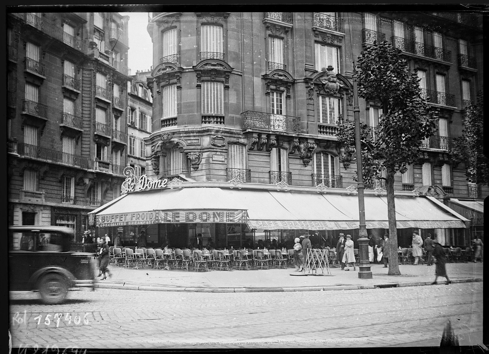
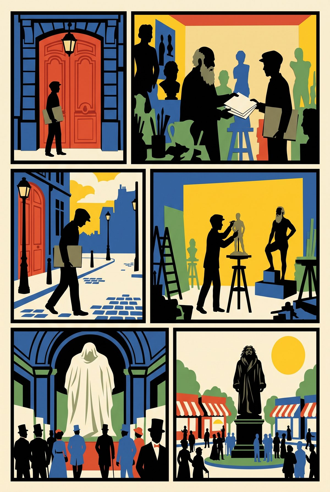
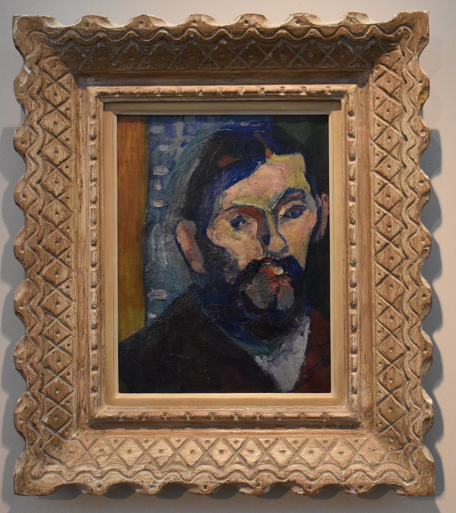

18:33 · seven minutes · then 250 m east along the boulevard to stop 5

Le Dôme, 108 boulevard du Montparnasse. Photograph by Agence Rol, 25 August 1931. Bibliothèque nationale de France, public domain.
Stand on the wide pavement in front of Le Dôme, facing the statue on the island.
▶ Listen · Rodin sends Matisse away · 6 min
In 1899 Henri Matisse, twenty-nine and unknown, showed his drawings to Auguste Rodin, the most famous sculptor alive. Rodin told him he had "a facile hand" and to come back with fussier drawings. Matisse never went back. Instead he hired Rodin's own model, Bevilacqua, an Italian, and kept him for up to five hundred sittings.
Rodin's Balzac, on the island in front of you, was mocked and refused in 1898. It stood here only on 2 July 1939, forty-one years later.
Le Dôme was the headquarters of the German painters who ran Matisse's school for him. At La Rotonde, across the boulevard, the owner Victor Libion let broke painters pay with a drawing. La Coupole opened in 1927 with 1,200 bottles of champagne; the legend says its painters were paid in drinks, the invoice found in 1993 says 23,000 francs.
Fun fact
Picasso's Dove of Peace (1949) was one of Matisse's pet pigeons, rehomed with Picasso when Matisse's building banned his aviary. The island is named place Pablo-Picasso.
Quiz · How did a painter with no money pay his bill at La Rotonde?
With a drawing, which Libion kept until the painter could pay.
The story in six panels

1Paris, 1899. A young unknown painter brings his drawings to the most famous sculptor alive.
2The verdict. A facile hand. Draw fussier. Come back.
3He never went back. Facile? That was false.
4Instead he hired the sculptor's own model, an Italian, for up to 500 sittings.
5The sculptor's own Balzac: shown in 1898, mocked, refused, kept at home.
6Unveiled on this island on 2 July 1939, forty-one years later.
Drawn in paper-cut style with Gemini from our script; no real person is depicted.
More to look at

Henri Matisse, Portrait de Bevilacqua, c. 1900. Musée des Beaux-Arts de Bordeaux. Artwork public domain; photo Tylwyth Eldar, CC BY-SA 4.0.